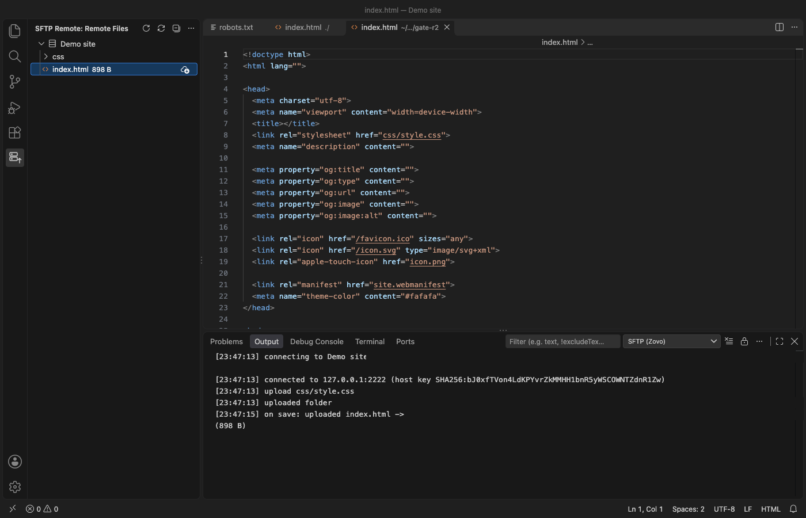

VS Code에서 SFTP 또는 FTP로 서버에 파일을 업로드하는 방법
무료 확장 SFTP & FTP Sync and Upload를 설치하고 호스트, 사용자, 서버 폴더를 적은 .vscode/sftp.json을 만듭니다. 그러면 파일을 저장할 때마다 SFTP, FTP 또는 FTPS로 업로드됩니다. 파일이나 폴더를 마우스 오른쪽 버튼으로 클릭해 업로드하거나 다운로드할 수 있고, 파일은 서버 사본과 비교할 수도 있습니다. Remote Files 뷰에서는 서버 파일을 일반 탭으로 엽니다. .vscode 폴더, .env 파일, 개인 키는 절대 업로드되지 않습니다. 이 모든 기능은 무료이며 계정이 필요 없습니다. Zovo Pro(USD 19 한 번)는 Sync Folder with Remote, Roll Back a Remote File, Server Profiles and Jump Host의 세 가지 도구를 더하며, 각 도구는 3번 무료로 쓸 수 있습니다.
무료, MIT 라이선스. 확장 ID zovo.zovo-sftp, 버전 0.1.0.
다른 언어판 English · Türkçe · Bahasa Indonesia · Tiếng Việt · हिन्दी · ไทย · Українська · Français · Polski · Português (Brasil) · Русский · 简体中文

VS Code에서 하는 방법
- Marketplace에서 SFTP & FTP Sync and Upload 확장을 설치하거나, Ctrl+P(macOS에서는 Cmd+P)를 누르고
ext install zovo.zovo-sftp를 실행합니다. - Command Palette에서 "SFTP: Create sftp.json Config"를 실행하거나, SFTP Remote 뷰에서 Create sftp.json을 클릭합니다.
protocol(sftp,ftp,ftps중 하나),host,username,privateKeyPath(비밀번호를 쓰려면 생략),remotePath를 채웁니다.remotePath는 로컬 폴더에 대응하는 서버 폴더입니다. 키 위에 마우스를 올리면 도움말이 나옵니다."uploadOnSave": true를 설정합니다. 이제 저장하는 파일마다 업로드됩니다. 입력한 비밀번호는 한 번만 묻고 편집기의 보안 저장소(secret storage)에 보관하며,sftp.json에는 저장하지 않습니다.- Explorer에서 파일이나 폴더, 또는 탭을 마우스 오른쪽 버튼으로 클릭하고 Upload, Download, Compare with Server Copy 중 하나를 고릅니다. Compare는 파일에서만 동작합니다.
- Remote Files 뷰를 열어 서버를 탐색합니다. 파일을 일반 편집기 탭에서 열고 저장해 다시 올리거나, 다운로드하거나, 경로를 복사하거나, 삭제할 수 있습니다. "SFTP: Show Transfer Log"는 모든 연결과 전송을 보여 줍니다.
무료 기능과 Zovo Pro가 더하는 기능
저장 시 업로드, Upload, Download, Compare with Server Copy, Remote Files 뷰, SFTP, FTP, FTPS, 호스트 키 확인, 전송 로그는 무료입니다. 계정이 필요 없고, 자신의 서버 말고는 어디에도 로그인하지 않습니다. 원격 측정도 없습니다.
서버와 로컬 폴더의 내용이 서로 달라졌을 때 Sync Folder with Remote는 두 쪽을 비교해, 무엇이든 옮기기 전에 모든 차이를 목록으로 보여 줍니다. 로컬에만 있는 파일, 서버에만 있는 파일, 한쪽이 더 최신인 파일이 표시됩니다. 파일마다 업로드, 다운로드, 삭제, 건너뛰기를 고르고, 두 버전을 나란히 놓은 diff를 열고, 드라이런 결과를 텍스트로 저장한 뒤 적용합니다. 서버에서 무엇이 바뀔지 바뀌기 전에 정확히 확인할 수 있습니다.
Sync Folder with Remote 사용하기 (Zovo Pro)
- Explorer에서 폴더를 마우스 오른쪽 버튼으로 클릭하고 "Zovo Pro: Sync folder with remote (diff preview)"를 고르거나, Command Palette에서 "SFTP: Sync Folder with Remote, Diff Preview (Pro)..."를 실행합니다. Remote Files 뷰의 제목 표시줄에도 같은 버튼이 있습니다.
- 계획을 읽습니다. 파일마다 업로드, 다운로드, 삭제, 건너뛰기를 고르고, 확실하지 않은 파일은 diff를 열어 확인합니다.
- 계획을 적용합니다. 동기화 계획이 표시되었을 때만 시도 횟수가 차감되며, Escape나 Cancel은 횟수를 쓰지 않습니다.
Sync Folder with Remote 기능은 라이선스를 묻기 전에 내 컴퓨터에서 3번 무료로 쓸 수 있습니다. 팝업도 없고 카운트다운도 없습니다.
Zovo Pro는 USD 19를 한 번만 내면 됩니다. 구독이 아니며, SFTP & FTP Sync and Upload뿐 아니라 모든 Zovo 확장의 Pro 도구가 켜집니다. 카드(Stripe)로 결제하면 다음 페이지에 라이선스 키가 표시됩니다. VS Code의 Command Palette에서 "Zovo Pro: Enter Zovo Pro license key"를 실행하고 키를 붙여 넣으세요. 키는 네트워크 연결 없이 내 컴퓨터에서 확인됩니다. GitHub Sponsors로 결제할 때는 "$19 one time" 등급을 고른 뒤 "Zovo Pro: I already paid: unlock with GitHub Sponsors"를 실행하세요.
5명 팀 라이선스는 USD 59 한 번이며, 카드로 결제할 수 있습니다. 모든 규칙과 Pro 도구는 Zovo Pro 페이지(영어)에 있습니다.
Cursor, Windsurf, VSCodium에서
- Ctrl+Shift+X(macOS에서는 Cmd+Shift+X)로 Extensions 보기를 엽니다.
zovo.zovo-sftp를 검색하고 Install을 누릅니다. Cursor, Windsurf, VSCodium은 Open VSX에서 확장을 설치하며, 이 확장은 그곳에서zovo/zovo-sftp라는 이름으로 올라가 있습니다.- 에디터에 확장 갤러리가 없으면 Open VSX 페이지에서 .vsix 파일을 내려받고 "Extensions: Install from VSIX..."를 실행합니다.
- 그다음은 VS Code에서와 똑같이 동작합니다.
SFTP & FTP Sync and Upload의 기능
- SSH 키, 암호화된 키, SSH 에이전트 또는 비밀번호를 쓰는 SFTP, FTP, 명시적 또는 암시적 TLS를 쓰는 FTPS.
.vscode,.git,.env파일, 개인 키,.npmrc등 비밀 파일은 절대 업로드되지 않습니다.ignore에.gitignore형식으로 패턴을 직접 추가할 수 있습니다.- 서버의 호스트 키를 확인합니다.
hostFingerprint로 고정하거나 첫 연결 때 확인합니다. 키가 바뀌면 연결을 멈춥니다. - 신뢰하지 않은 폴더(Restricted Mode)에서는 확장이 꺼져 있으므로, 내려받은 프로젝트가 파일을 어딘가로 보낼 수 없습니다.
- 다른 두 Pro 도구도 있습니다. Roll Back a Remote File은 업로드가 서버 파일을 덮어쓰기 전에 그 파일의 최근 서버 사본 10개를 내 컴퓨터에 보관합니다. Server Profiles and Jump Host는 여러 서버(스테이징, 프로덕션)를 하나의
sftp.json에 넣고 SSH 점프 호스트를 거쳐 연결합니다.
할 수 없는 것
- 한 서버에는 한 번에 하나의 연결만 열며, FTP 전송은 하나씩 차례로 실행됩니다.
- 서버의 심볼릭 링크는 파일이면 따라가지만, 링크된 폴더는 폴더 업로드, 다운로드, 동기화에서 탐색하지 않습니다.
- PuTTY
.ppk형식의 키는 먼저 OpenSSH 형식으로 변환해야 합니다(puttygen key.ppk -O private-openssh -o key). - 동기화는 크기와 수정 시간을 비교한 뒤 크기가 같은 파일은 바이트를 비교하며, 한 번에 최대 300개 파일 또는 64 MB까지 처리합니다.
- 롤백 사본은 기본적으로 5 MB 이하 파일만 보관하며, 이 컴퓨터에만 저장됩니다.
자주 묻는 질문
무료인가요?
저장 시 업로드, Upload, Download, Compare with Server Copy, Remote Files 뷰, 전송 로그는 SFTP, FTP, FTPS 모두에서 무료입니다. 세 가지 Pro 도구 Sync Folder with Remote, Roll Back a Remote File, Server Profiles and Jump Host는 각각 3번 무료로 쓸 수 있습니다. 그 뒤에는 Zovo Pro가 필요하며, USD 19 한 번으로 모든 Zovo 확장에 적용됩니다.
비밀번호가 sftp.json에 저장되나요?
아니요. 입력한 비밀번호나 암호 문구는 편집기의 보안 저장소에 보관됩니다. sftp.json에 password를 넣지 않으면 한 번만 묻습니다.
.env 파일도 업로드되나요?
아니요. .vscode, .git, .env 파일, 개인 키, .npmrc는 기본 제외 목록에 있어 절대 업로드되지 않습니다.
확장 없이 VS Code만으로 SFTP 업로드를 할 수 있나요?
아니요. VS Code에는 SFTP나 FTP 업로드 기능이 없습니다. Remote SSH는 서버에 있는 파일을 직접 편집하는 방식입니다. 로컬 프로젝트를 업로드하려면 확장이 필요하거나, 터미널에서 scp나 rsync를 써야 합니다.
더 알아보기
영어판 가이드에 더 자세한 내용과 다른 방법이 나와 있습니다. 모든 기능과 설정은 SFTP & FTP Sync and Upload 페이지(영어)에 설명되어 있습니다.
2026년 11월 13일, 현재 Marketplace 버전을 기준으로 사실을 확인했습니다.